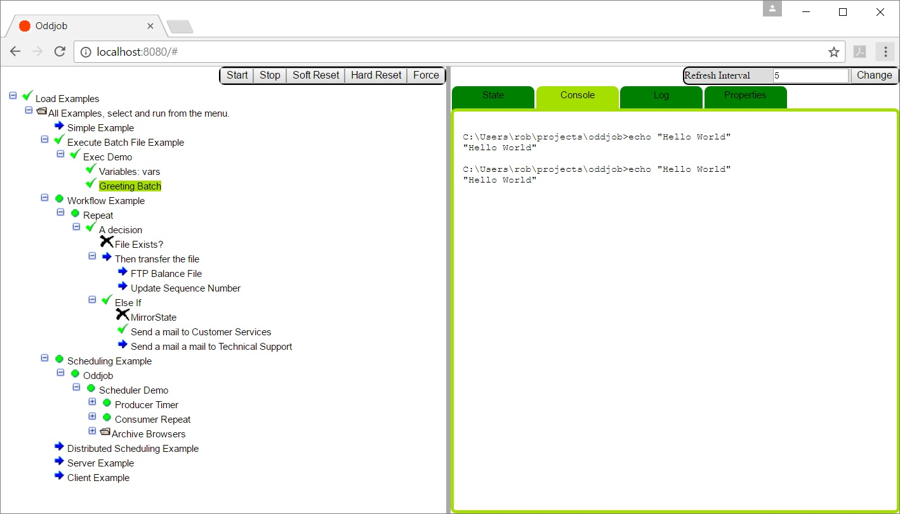

Oddjob's Servlet and Browser Interface.
Oddjob comes with a web interface. To run the web interface you need a Servlet Engine or application server like tomcat.
Oddjob uses a Servlet 3.0 deployement descriptor and so Tomcat Version 7 or above is required.
To install Oddjob on Tomcat simply copy the oddjob.war file supplied with the binary distribution of Oddjob to the webapps directory of Tomcat and then restart Tomcat.
With the default Tomcat setup the URL http://localhost:8080/oddjob will open Oddjob's browser view and it will look something like this:
When re-running structural jobs, the browser view of the job tree lags what's Oddjob is doing so it is necessary to press refresh (sometimes several times) until it catches up.
An automatic refresh in can be entered in seconds, this will have the same effect as pressing the refresh button every that number of seconds. To cancel the automatic refresh delete simply clear this field.
The Webapp starts an instance of Oddjob. This will load an Oddjob XML configuration file as specified in the web.xml web application deployment descriptor.
The web.xml contains lots of comments with further information on the supported properties.
Log levels are controlled by the log4j.properties file in the
WEB-INF/classes directory. By default log level is set
to INFO for all loggers.
There isn't any. Browser based authentication including a read-only role will be added soon.
The Oddjob Webapp currently creates threads. This isn't allowed by the J2EE specification and many Servlet containers don't allow it including Googles App Engine.
In theory the Executions Servlet could be replace with an instance of one that provided OddjobExecutors that didn't user ThreadPools - but this is still theory.